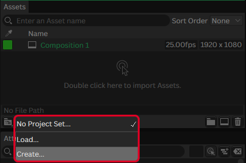
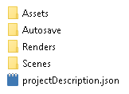
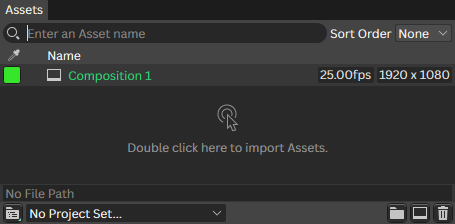

Проекты
Формат проекта
Проект Cavalry - это файл с расширением .cv, который является обычным JSON-файлом. Его можно открыть в любом текстовом редакторе и увидеть то, как устроена ваша сцена на уровне данных.
Настройки проекта
Изображения, шрифты и другие ресурсы никогда не «зашиваются» в файл .cv, а хранятся отдельно.
Чтобы как-то упорядочить их хранение, в Cavalry используются настройки проекта (project settings) - специальная система, которая создаёт папки и затем ссылается на них. Это особенно важно при командной работе, когда над проектом трудятся несколько человек.
Что это даёт:
-
Все пути к файлам становятся относительными
@project/Assets/... - При передаче проекта на другой ПК ссылки на ассеты не «ломаются».
- Проводник автоматически открывается в нужной папке (Assets, Scenes, Renders).
Для создания настроек нужно в нижнем левом углу Окна ассетов нажать на выпадающий список и выбрать Create:

После этого в открывшемся Проводнике нужно выбрать (или создать новую) папку вашего проекта и нажать Choose,
в результате чего будет создана структура необходимых папок:

Теперь все сторонние ресурсы вы должны помещать внутрь папки Assets и впоследствии, при передачи папки проекта на другой ПК или по сети, ваши ассеты будут видимы для Cavalry!
Ассеты
В Cavalry ассеты (assets) — это внешние ресурсы, которые вы импортируете в проект и используете внутри сцен: изображения, видео, шрифты, аудио, SVG, таблицы данных и даже другие сцены Cavalry.
Все ассеты отображаются в специальном Окне ассетов, которое служит центром управления ресурсами проекта:

Импортируемые форматы
Cavalry поддерживает широкий спектр форматов файлов для импорта:
| Категория | Поддерживаемые форматы |
|---|---|
| Изображения |
.png, .jpg, .bmp,
.ico, .webp, .exr[только 1 канал], .psd[без слоёв]
|
| Видео / Анимация |
.mp4, .mov, .webm, .apng
|
| Аудио |
.mp3, .wav, .aac,
.aif, .aiff, .caf
|
| Шрифты | .ttf, .otf, .otc |
| Векторная графика | .svg |
| Данные |
.csv, .xlsx, .json,
.txt, .gsheet
|
| Сцены Cavalry |
.cv[как Reference],
.cvc[как Scene]
|
При импорте видео со звуком аудиодорожка добавляется как дочерний элемент видео, и её можно использовать отдельно.
Умные папки
Умные папки (smart folders) — это способ импортировать целую папку с файлами и управлять ими через индексы, что критически важно для процедурной работы.
Image Smart Folder позволяет ссылаться на файлы изображений.
Audio Smart Folder позволяет ссылаться на звуковые файлы.
Умные папки поддерживают максимальную глубину в 5 директорий.